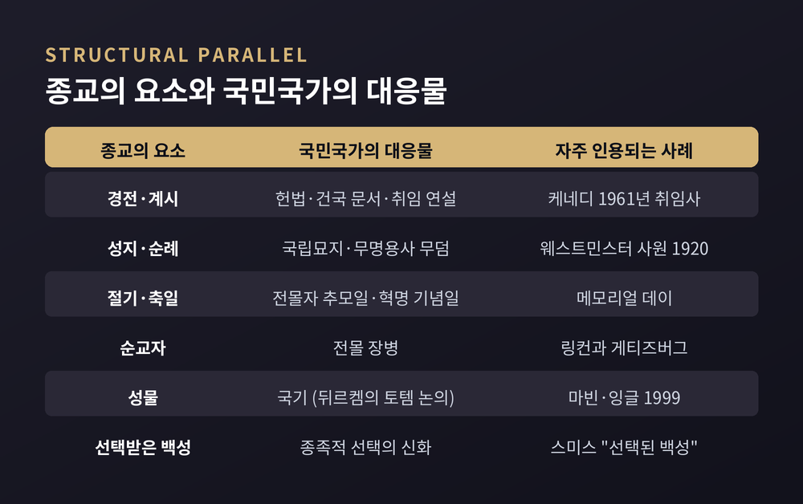
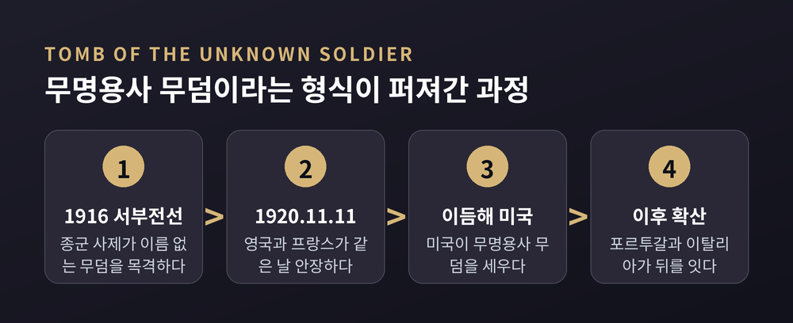
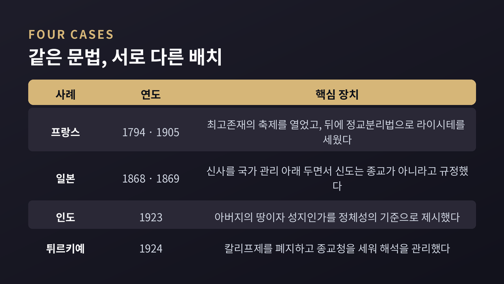

종교와 민족주의, 근대 국가가 성스러움의 언어를 빌린 이유
이번 글에서는 종교와 민족주의가 어떻게 서로의 언어를 주고받았는지 종교학의 눈으로 정리해 보겠습니다. 세속 국가라고 불리는 나라들도 성지와 순교자와 절기를 갖추고 있습니다. 그 겹침을 학자들이 어떤 개념으로 설명해 왔는지 살펴보겠습니다.
세 줄 요약
- '시민종교'라는 말은 루소가 『사회계약론』에서 처음 썼고, 1967년 로버트 벨라가 미국 사례에 적용해 학계의 표준 개념으로 만들었습니다.
- 무명용사 무덤·국립묘지·국가 기념일은 종교의 성지·유해 숭배·절기와 구조가 같습니다. 베네딕트 앤더슨은 이를 근대 민족주의의 가장 인상적인 표상으로 꼽았습니다.
- 다만 "민족주의는 종교다"라는 단정에는 반론이 많습니다. 기능적 정의에 기댄 설명이라는 비판이 대표적입니다.
'시민종교'라는 말은 어디서 왔나
출발점은 18세기입니다.
'시민종교(religion civile)'라는 표현 자체는 장 자크 루소의 것입니다. 『사회계약론』 제4권 제8장의 제목이 곧 '시민종교'입니다.
루소가 설계한 시민종교는 두꺼운 신학이 아닙니다. 그는 교의가 소수여야 하고, 단순해야 하며, 주석 없이 정확하게 표현되어야 한다고 못 박았습니다.
긍정적 교의는 다섯 가지였습니다. 예지와 섭리를 지닌 신의 존재, 내세, 의인의 행복, 악인의 징벌, 그리고 사회계약과 법의 신성함입니다. 부정적 교의는 단 하나, 불관용의 금지였습니다.
마지막 두 항목이 중요합니다. 법을 신성하다고 선언하는 순간, 정치 질서가 신성의 목록에 편입됩니다. 그리고 "우리 밖에 구원이 없다"고 말하는 태도만 배제하면, 서로 다른 신앙의 시민들이 같은 교의를 함께 승인할 수 있습니다.
기존 종교를 대체하려는 기획이 아니었습니다. 정치공동체 위에 얇은 성스러움의 층을 한 겹 덧씌우려는 기획이었습니다.
1967년, 벨라가 미국에서 발견한 것
이 개념을 사회과학의 무대로 끌어올린 사람이 로버트 벨라(Robert N. Bellah)입니다.
그의 논문 「미국의 시민종교(Civil Religion in America)」는 1967년 겨울호 『다이달로스(Dædalus)』에 실렸습니다. 당시 벨라는 하버드대 사회학 교수였습니다. 이 짧은 글은 종교사회학계에 거의 전례 없는 반향을 일으켰고, 이후 여러 해 동안 학회의 중심 주제가 되었습니다.
벨라가 다룬 자료를 보면 접근법이 분명해집니다.
첫째, 연설입니다. 그는 케네디의 1961년 취임 연설에서 '신'이 세 번 등장한다는 사실에 주목했습니다. 앞부분에 두 번, 마지막에 한 번입니다. 왜 그 자리였는지를 묻는 것이 그의 방법이었습니다.
둘째, 순교자입니다. "순교한 대통령" 링컨은 전몰자와 겹쳐졌고, "마지막 온전한 헌신을 바친" 이들의 이야기와 함께 희생이라는 주제가 시민종교에 각인되었습니다. 그가 봉헌한 게티즈버그 국립묘지는 이후 알링턴 국립묘지에 의해서만 상징적 비중이 가려졌습니다.
셋째, 절기입니다. 남북전쟁에서 유래한 메모리얼 데이는 "순교한 죽은 자들에 대한 재헌신, 희생의 정신, 그리고 미국적 비전"에 의례의 형식을 부여했습니다.
넷째, 신화입니다. 모세가 백성을 약속의 땅으로 이끄는 출애굽 서사가 건국 이야기의 뼈대로 전용되었습니다.
경전, 순교자, 절기, 신화. 종교학이 개별 종교를 분석할 때 쓰는 항목과 정확히 겹칩니다.

성스러운 언어가 저문 자리에서
왜 하필 근대에 이런 일이 벌어졌을까요.
베네딕트 앤더슨의 『상상의 공동체』(1983)가 자주 인용되는 대답입니다.
앤더슨은 최초의 상상된 공동체가 종교 공동체였다고 봅니다. 그 공동체의 의미는 번역되지 않는 성스러운 언어에 기대고 있었습니다. 사제는 신비한 세계로 통하는 통로였습니다.
그런데 계몽의 세기가 종교적 사고방식에 황혼을 가져왔습니다. 민족주의는 그 비워진 자리를 적어도 부분적으로 채우며 자랐습니다.
결정적 장치로 그가 지목한 것이 인쇄자본주의입니다. 출판업자들은 판매를 늘리려고 라틴어가 아니라 속어로 책을 찍었습니다. 그 결과 라틴어나 한문 같은 범문화적 성스러운 문자의 지위가 내려앉았습니다. 방언이 다른 사람들이 같은 활자를 읽으며 서로를 상상할 수 있게 되었습니다.
예전엔 같은 성스러운 언어를 읽는 사람이 한 공동체였습니다. 지금은 같은 신문을 읽는 사람이 한 국민입니다.
그리고 앤더슨은 이렇게 적었습니다.
"근대 민족주의 문화의 이보다 더 인상적인 표상은 없다 — 위령비와 무명용사의 무덤보다."
그는 이 무덤들이 식별 가능한 유해도 불멸의 영혼도 비어 있는 채로, 유령 같은 민족적 상상으로 가득 차 있다고 보았습니다. 개인의 신원이 지워졌기에 오히려 민족이라는 추상을 담을 수 있다는 것입니다. 덧붙인 문장이 날카롭습니다. 무명 마르크스주의자의 무덤이나 전사한 자유주의자를 위한 위령비는 상상하기 어렵다고 말입니다.
1920년 11월 11일, 성지가 만들어진 날
성지는 아득한 옛날에만 생기지 않습니다. 날짜를 특정할 수 있는 경우도 있습니다.
1920년 11월 11일, 프랑스의 무명용사가 개선문에, 영국의 무명 전사가 웨스트민스터 사원에 같은 날 안장되었습니다. 이 둘이 무명용사 무덤의 최초 사례입니다.
착상은 전선에서 나왔습니다. 1916년 종군 사제 데이비드 레일턴 목사는 서부전선 아르망티에르의 한 뒷마당 무덤에서 거친 나무 십자가를 보았습니다. 거기에는 연필로 "An Unknown British Soldier"라고 적혀 있었습니다. 1920년 그는 웨스트민스터 사원에 제안합니다. 신원 미상의 병사 한 명을 "왕들 사이에" 묻어, 제국 전역에서 죽어간 수십만 명을 대표하게 하자고 말입니다.
의례의 구성은 대단히 종교적이었습니다. 국왕과 왕실 가족, 의회 각료, 그리고 전쟁으로 남편과 아들을 잃은 여성 100명이 회중을 이루었습니다. 시신은 서부전선 전장에서 가져온 흙 아래 묻혔습니다. 수천 명이 줄을 서서 참배했습니다.
화이트홀의 세노타프는 아예 "상징적인 빈 무덤"입니다.
이 형식은 빠르게 번졌습니다. 이듬해 미국이 자국의 무명용사 무덤을 세웠고, 포르투갈과 이탈리아가 뒤를 이었습니다. 이후 여러 나라가 같은 형식을 받아들였습니다.
유해, 봉헌된 흙, 정해진 날짜와 시각, 줄지어 선 참배객. 성인의 유골을 모시던 오래된 문법이 국가의 의례로 번역된 셈입니다.

오래되어 보이지만 실은 최근에 만들어진 것들
1983년은 민족주의 연구에서 분수령으로 불립니다. 그해에 세 권이 나왔습니다. 앤더슨의 『상상의 공동체』, 어니스트 겔너의 『민족과 민족주의』, 그리고 에릭 홉스봄과 테런스 레인저가 엮은 『만들어진 전통』입니다. 이 세 권은 지금도 대부분의 연구에 해석 틀을 제공합니다.
홉스봄의 서문에 핵심이 있습니다. 오래된 것으로 보이거나 오래되었다고 주장하는 많은 '전통'이 실은 기원이 매우 최근이며, 때로는 발명된 것이라는 지적입니다.
책이 다루는 사례는 구체적입니다. 웨일스와 스코틀랜드 '민족 문화'의 창조, 19세기에서 20세기에 걸친 영국 왕실 의례의 정교화, 영국령 인도와 아프리카에서의 제국 의례의 기원입니다.
홉스봄은 민족과 민족주의 자체를 만들어진 전통으로 봅니다. 발명된 전통은 민족 정체성을 빚어 통합을 촉진하고, 특정 제도와 관행을 정당화합니다.
여기서 오해 하나를 덜어둘 필요가 있습니다. '발명'이라는 말은 가짜라는 뜻이 아닙니다. 기원이 최근이라는 사실과, 그것이 사람들에게 실제로 신성하게 경험된다는 사실은 충돌하지 않습니다.
같은 문법, 다른 배치 — 네 나라의 사례
종교와 국가의 관계는 나라마다 다르게 조합되었습니다. 네 가지만 짚어 보겠습니다.
프랑스는 혁명기에 직접 제의를 만들었습니다. 로베스피에르가 세운 '최고존재의 숭배'는 가톨릭을 대체하고 당시 인기를 끌던 무신론적 '이성의 숭배'를 약화시키려는 이신론적 제의였습니다. 1794년 6월 8일 열린 최고존재의 축제에서, 그는 국민공회 의원들을 이끌고 인공으로 만든 '산' 정상에 올랐습니다. 군중은 아래에서 지켜보았고, 의원들은 서약을 낭독했습니다. 한 세기 뒤인 1905년 12월 9일에는 정교분리법이 통과됩니다. "공화국은 어떤 종교도 인정하지 않고, 급여를 주지 않으며, 보조금을 지급하지 않는다"는 문장으로 유명한 법입니다.
일본의 사례는 정의 문제를 정면으로 보여줍니다. 메이지 유신 이후 정부는 신사를 국가 통제 아래 두었습니다. 그러면서 제정일치 원칙에 따라 신기관은 "신사는 종교의 장소가 아니라 의례의 장소이므로 신도는 종교가 아니다"라고 주장했습니다. 종교가 아니라고 규정해야 국가가 개입할 수 있었던 것입니다. 야스쿠니 신사는 1869년 6월 메이지 천황에 의해 창건되었습니다. 다만 'State Shinto'라는 범주 자체에 모호함이 많고 신도 역사학계 안에 상당한 논쟁이 있다는 점은 함께 적어둡니다.
인도의 힌두트바 논의에서는 '성지'의 위치가 기준이 됩니다. V. D. 사바르카르가 1923년 수감 중 쓴 팸플릿은 인도를 아버지의 땅(pitribhumi)이자 동시에 성지(punyabhumi)로 여기는 이들을 '힌두'로 정의했습니다. 학자들은 흔히 라슈트라(영토), 자티(혈통), 상스크리티(문화)라는 세 기준으로 요약합니다.
튀르키예는 세속주의의 다른 얼굴을 보여줍니다. 1924년 오스만 칼리프제가 폐지되면서 종교청(디야네트)이 세워졌습니다. 이 기구는 통제되고 균질한 튀르키예어 기반의 해석을 보급하는 임무를 맡았습니다. 역사가들의 주요 논지는 케말주의가 국가의 종교 감독을 폐지한 것이 아니라 오히려 중앙집중화했다는 것입니다.

순교와 희생이라는 문법
성지 다음으로 자주 분석되는 것이 희생 담론입니다.
앤서니 D. 스미스는 런던정경대 명예교수이자 겔너의 제자로, 민족상징주의를 세운 학자입니다. 그의 『선택된 백성(Chosen Peoples)』은 세속화와 세계화가 진행된 뒤에도 성스러운 믿음이 민족 정체성의 중심에 남아 있다고 봅니다.
그가 제시한 네 요소는 이렇습니다. 신에 의한 종족적 선택의 신화, 성스럽고 동시에 공동체의 것으로 여겨지는 장소에 대한 오랜 애착, 황금시대를 회복하려는 욕구, 그리고 집단과 개인의 희생에 재생의 힘이 있다는 믿음입니다. 목차에는 '언약의 백성', '성스러운 고향', '영광스러운 죽은 자들' 같은 항목이 그대로 등장합니다.
더 강한 주장을 편 연구도 있습니다. 캐럴린 마빈과 데이비드 잉글은 1999년 케임브리지대 출판부에서 낸 『피의 희생과 민족』에서, 애국심을 피의 희생을 중심에 둔 시민종교로 규정했습니다. 뒤르켐이 국기를 토템으로 본 서술을 이어받아, 시민종교와 민족주의를 신성화된 합의를 가리키는 동의어라고까지 말합니다.
이 테제는 논쟁적입니다. 분석적 통찰이라는 평가와 기능주의적 환원이라는 비판이 서평마다 갈립니다.
반론도 함께 보아야 합니다
여기까지 읽으면 결론이 하나로 기울 것 같습니다. 그런데 학계는 그렇게 정리하지 않았습니다.
첫째, 정의의 문제입니다. 역사학자 존 F. 윌슨을 비롯한 연구자들은 '종교로서의 시민종교' 개념을 체계적으로 비판했습니다. 벨라가 종교를 실질적 정의가 아니라 기능적 정의로 잡았고, 그것만으로는 부족하다는 지적입니다.
둘째, 경험적 근거의 문제입니다. 상징이 의미를 가지려면 실제 사람들이 그것을 지각하고 믿어야 합니다. 로널드 윔벌리를 비롯한 연구자들이 1976년 무렵부터 시민종교 신념 문항을 만들어 여러 표본에 조사한 이유가 여기에 있습니다.
셋째, 벨라 자신의 수정입니다. 그는 1975년 『깨어진 언약』에서 미국이 건국 이념에 담긴 도덕적 언약을 깨뜨렸으며, 미국 시민종교가 "텅 비고 깨어진 껍데기"가 되었다고 진단했습니다. 개념을 만든 사람이 그 개념의 한계를 가장 먼저 말한 셈입니다.
넷째, 틀 자체의 재정비입니다. 로저스 브루베이커는 2012년 『네이션스 앤드 내셔널리즘』에 실은 논문에서 종교와 민족주의를 연구하는 네 가지 접근을 구분했습니다. 둘을 유사한 현상으로 다루는 접근, 종교로 민족주의의 기원과 힘을 설명하는 접근, 종교를 민족주의의 일부로 보는 접근, 그리고 종교적 민족주의라는 구별되는 형태를 상정하는 접근입니다. 그는 민족주의를 특유하게 세속적인 현상으로 보는 오래된 이해를 다시 검토하며 논문을 닫습니다.
마크 유르겐스마이어의 정리도 참고할 만합니다. 그는 민족주의와 종교가 모두 '질서의 이데올로기'로서 외부 권능에 대한 믿음과 경외의 감정과 의례를 포함하며, 신봉자들을 상상된 도덕 공동체로 묶는다고 보았습니다.
정리하면 이렇습니다.
근대 국민국가가 성스러움의 언어를 빌린 것은 사실입니다. 다만 그 사실이 곧 "민족주의는 종교다"라는 등식을 뜻하지는 않습니다. 등식으로 가는 순간, 설명은 편해지지만 각 사례의 결이 사라집니다. 프랑스와 일본과 인도와 튀르키예는 같은 문법을 아주 다르게 배치했습니다.
그래서 이 분야의 질문은 조금씩 형태를 바꿔 왔습니다. "민족주의는 종교인가"에서 "민족주의의 어떤 국면이 종교적 문법을 쓰는가"로 말입니다.
이 글도 완결된 답을 드리지는 못합니다. 개념의 계보와 반론을 나란히 놓아둔 정도입니다.
"성스러움은 사라진 것이 아니라, 자리를 옮겼습니다."
다음에 국립묘지나 기념일 앞에 서게 되신다면, 그 자리가 무엇을 대신하고 있는지 한 번쯤 헤아려 보셔도 좋겠습니다.